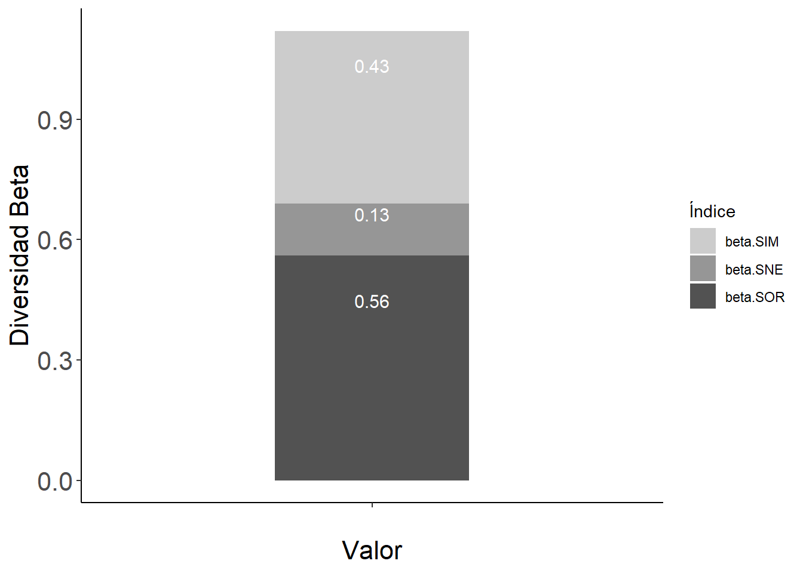
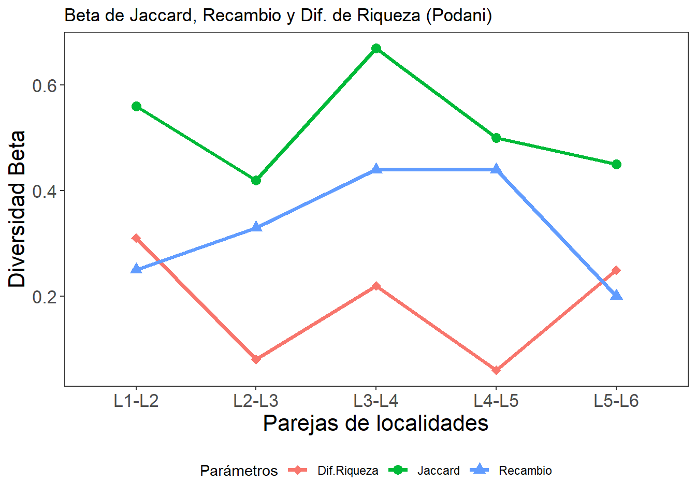
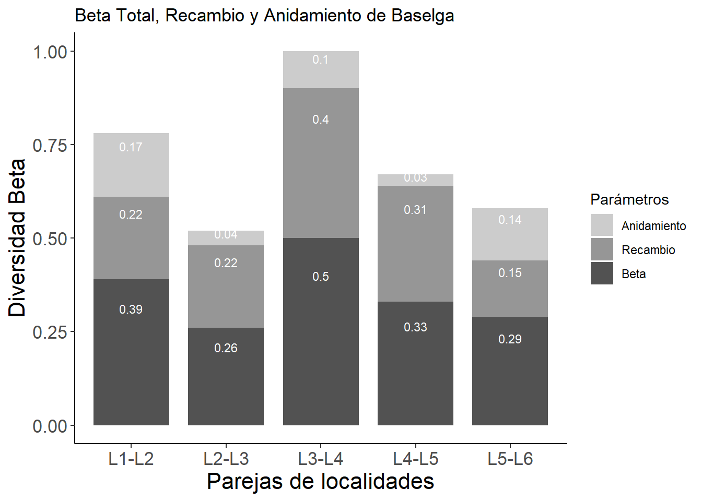
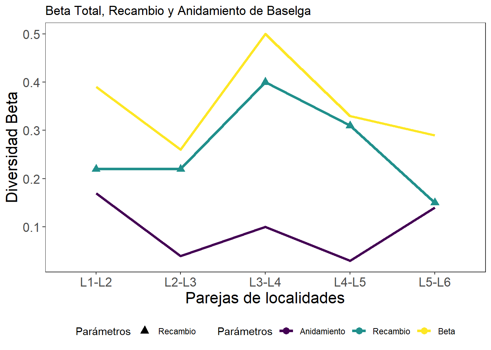

Código
# install.packages("betapart") # Para el análisis de diversidad beta de Baselga
# install.packages("caret") # Para algunas figuras de diversidad beta
El presente análisis de diversidad beta se realiza con los datos obtenidos de abundancia para 22 especies de escarabajos coprófagos, colectados en seis (6) localidades del Departamento del Magdalena. En este sentido, el enfoque de este análisis consiste en evaluar los patrones de este tipo de diversidad (beta), de acuerdo a las propuestas de tres autores que se complementan en sus análisis (1) Whittaker, (2) Podani y (3) Baselga. el primero se utiliza para evaluar la generalidad de la diversidad alfa promedio y gamma, como atributos de la beta. Los dos autores finales se comparan a lo largo de todo el anáslisis. A partir de esto se obtuvieron los siguientes resultados:
La diversidad alfa no supera a las 18 especies (Localidad 6), con el menor valor de 9 especies (Tabla 4). La diversidad gamma fue de 22 especies con un estimado o esperado aproximado de 24 especies, según el estimador Jack1 (Tabla 5).
La diversidad beta total, con datos de abundancia fue de 0.48, con una mayor contribución (LCBD) en las localidades de lomeríos o de la zona Sur que son las menos alteradas (L4, L5 y L6) (Figura 2) y por los aportes de las especies C. aequinoctialis, C. aequinoctialis, C. lituratus, C. septemmaculatus, C. variabilis, E. impressicollis, O. hirculus y U. deavilai, las cuales pueden presentar un potencial de conservación.
La diversidad beta total, con datos binarios fue casi la mitad con la familia Podani (Tabla 6) con un valor de 0.27, comparado a la Familia Baselga (Tabla 8) con 0.56. El mayor aporte para los dos casos lo define el componente de reemplazo o de recambio de especies.
La diversidad beta total, con datos binarios vs. de abundancia en los cálculos de la familia Podani, muestra que si bien hay cambios entre cada estimador, para los dos índices binarios domina el reemplazo y para el caso de abundancia domina la diferencia de riqueza casi en el doble de los primeros (Tabla 7). Para el caso de los binarios domina el reemplazo y para los de abundancia domina la diferencia de riqueza.
La diversidad beta para las localidades de montaña (zona Norte) y las localidades de lomeríos (zona Sur), con datos binarios presentó un patron inverso entre la familia de Podani y la de Baselga (Tabla 8 y Tabla 9). Según Podani se registraron valores de diversidad beta de Jaccard de 0.25 y 0.22 para las zonas Norte y Sur, respectivamente (Tabla 8). Para el caso de Baselga, se registraron datos de 0.35 y de 0.41 para las zonas Norte y Sur, respectivamente (Tabla 9).
Es probable que el patrón más acorde en el comparativo entre zonas, sea la propuesta de Baselga, debido a que en la zona de lomeríos del Sur, se presentaron mejores condiciones de los parches, con mayor diversidad alfa y beta así como valores de recambio. La Tabla 10 resume los datos de diversidad beta total y por zonas. Las pruebas permutacionales de Mantel, de acuerdo a Oksanen (2022), muestran que no hay diferencias significativas entre los valores de diversidad beta para las dos zonas en comparación.
La diversidad beta para pares de localidades, con datos binarios presentó un patrón similar entre la propuesta de Podani (Figura 10) y la de Baselga (Figura 15), con un gradiente de mayores valores de diversidad beta, entre las combinaciones de las localidades de L2 y L3 con las localidades L4, L5 y L6.
La clasificación de las localidades (dendogramas) de acuerdo a sus componentes de diversidad beta, muestran patrones a agrupamiento similar entre las propuestas de Podani (Figura 12) y las de Baselga (Figura 17), con la formación de dos grupos que diferencian a las localidades del Sur (lomeríos) con las de Norte (montañas), excepto la localidad L1 que por su alta riqueza de especies se relaciona con las localidades del Sur.
Conclusiones:
a. Si bien, la propuesta de Podani ofrece opciones para el cálculo de diversidad beta con datos binarios y de abundancias Tabla 7, sus valores suelen ser más bajos a los de la propuesta de Baselga, aunque estos últimos solo ofrecen estimadores binarios.
b. La dificultad con Baselga radica en la interpretación de los valores de anidamiento, que según Legendre (2014) corresponden solo a una de las variantes de los valores de diferencias de riqueza descritos en los índices de Podani.
c. Aunque no se presentan diferencias estadísticas entre la diversidad beta comparando a las dos zonas, las estimaciones de diversidad suelen ser mayores en las localidades de lomeríos, ubicadas al Sur del departamento, dominadas por lor mecanismos de reemplazamiento.
Whittaker (1960) fue el primero en definir los términos de diversidades alfa, beta y gamma. Definió a la diversidad alfa, como la diversidad local, a la diversidad gamma como la diversidad regional y la diversidad beta como la relación entre las anteriores, orientada a el cambio o la variación en la composición de las especies en los ensamblajes o las comunidades. Esta diversidad beta también puede brindar información sobre la variedad de lugares o de nichos que se pueden presentar en cada localidad (cuando hay diferencias en la diversidad alfa entre localidades). Las diversidad alfa y gamma son relativas al tamaño de la escala espacial o temporal que se utilice (alfa y gamma por ej. pueden ser desde un bosque hasta un departamento).
De acuerdo a Whittaker (1960), surgen dos enfoques orientados a las diferencias entre las comunidades evaluadas con la diversidad beta: (1) Un recambio, es decir, el cambio direccional en la composición de de especies a lo largo de un gradiente espacial, temporal o ambiental predefinido. (2) La variación en la composición de especies entre unidades de muestreo, sin referencia a un gradiente explícito (cambio especies o anidamiento).
Baselga y Gómez-Rodríguez (2019), coinciden con la propuesta de Whittaker, debido a que las diferencias entre las comunidades pueden generarse por (1) el recambio, reemplazamiento o sustitución de unas especies por otras (turnover o replacement) y por el (2) anidamiento o nestedness, asociado a la perdida de especies de una comunidad más diversa a otra menos diversa.
Harrison et al. (1992), Williams (1996), Lennon et al. (2001), (Podani & Schmera, 2011) y (Legendre, 2014) coinciden con la propuesta de Whittaker, enfocando a las diferencias entre comunidades (diversidad beta) por dos procesos principales: (1) el recambio de especies (a veces llamado rotación) y (2) la diferencia de riqueza (ganancia y pérdida de especies, o su caso especial, anidamiento). En este orden de ideas, a continuación se describen aspectos asociados a los atributos de la diversidad beta o de diferencias entre comunidades.
El reemplazo o recambio de especies es lo que se observa a lo largo de gradientes ecológicos, en donde algunas especies se encuentran restringidas en un rango limitado del gradiente de acuerdo con su tolerancia y óptimos ecológicos. Algunas especies se observan en un extremo del gradiente, luego desaparecen y son reemplazadas por otras, y así sucesivamente. Las causas de estos patrones incluyen forzamientos ambientales, pero también, potencialmente, competencia y eventos históricos (es decir, perturbaciones y otros procesos que ocurrieron en el pasado y dejaron sus marcas en las comunidades). La configuración de los hábitats, como la presencia de bordes o ecotonos o las presiones antrópicas que modifican el paisaje, pueden repercutir en los procesos de reemplazamiento de especies (Filgueiras et al., 2016).
La diferencia de riqueza se refiere al hecho de que puedan existir diferencias en el número de especies entre comunidades. Esto puede ser causado por desapariciones de especies locales, tambien por diferencias en las condiciones abióticas locales que conducen a diferentes números de nichos u otros procesos ecológicos que llevan a las comunidades a un mayor o menor número de especies. En caso de que la diferencia de la riqueza aumente, puede estar directamente relacionado con la riqueza de nichos disponibles, o con procesos de anidamiento cuando hay perdida de especies en algunos lugares.
El anidamiento es un caso especial de diferencia de riqueza donde las especies en sitios más pobres son un subconjunto estricto de las especies presentes en sitios más ricos.
Los índices de (1) reemplazo, de (2) diferencia de riqueza y de (3) anidamiento no son índices de diversidad beta; pero descomponen coeficientes de disimilitud que pueden usarse para estimar la diversidad beta.
(Legendre, 2014) propone un marco algebraico unificador para comparar las fórmulas publicadas de los tres componentes anteriores, definiendo a dos familias de índices, a las que denominó familias de Podani y de Baselga respectivamente, en honor a los nombres de los autores que abordaron estos índices. En la familia de Podani, el índice de diferencia de riqueza representa solo una parte del anidamiento, debido a que no incluye a especies comunes.
La familia de Baselga, define a un índice de reemplazo o recambio comparable a los de Podani. El anidamiento de Baselga es comparable al anidamiento relativizado de Podani y Schmera (2011). Según (Legendre, 2014) , los índices de reemplazo y de diferencia de riqueza de la familia Podani son fáciles de interpretar en términos ecológicos, así como los índices de reemplazo en la familia Baselga. Los índices de anidamiento de Baselga son menos obvios, causando algunas controversias a la hora de analizarlos. (Baselga, 2010) denomina al indice de reemplazo como “recambio” o “rotación”, basado en la similitud de Sorensen o de Jaccard y al restarlo con este índice de sorensen, se determina al componente de anidamiento.
Si a representa a las especies en común, b a las especies presentes en un sitio A y ausentes en un sitio B en comparación, c representa lo opuesto a b, Segun Borcard et al. (2018), Podani y Baselga coinciden en el hecho de que (1) el anidamiento sólo es posible cuando hay especies en común (a > 0), (2) el valor máximo se alcanza cuando b o c es cero. (3) El anidamiento aumenta cuando c aumenta. (4) Podani considera que las especies comunes a contribuyen directamente al anidamiento, al contrario al anidamiento de Baselga. En consecuencia, cuando b = c = 0 (no hay especies exclusivas de uno de los dos sitios comparados), Podani alcanza el valor de anidamiento máximo de 1 y Baselga de cero. (5) La contribución de a al anidamiento es clara en el índice de Podani, pero confusa y no monótona en Baselga. (6) El anidamiento de Podani tiene un límite superior fijo y alcanzable de 1; el valor máximo de Baselga cambia para cada par de sitios.
El objetivo de este análisis de diversidad beta para el ensamblaje de coprófagos, se orienta en los siguientes aspectos:
Determinar la diversidad beta general o total. Para conocer la diversidad beta de la escala general.
Con la propuesta de Whittaker (1960), que se realiza con datos de abundancias de las especies. Donde β = S/α¯, donde S es la diversidad gamma y α¯ es la diversidad alfa o promedio de especies entre las n localidades. Con la propuesta de Legendre (2014), se calcula la diversidad beta (BDtotal), la contribución de las localidades (LCBD) y de las especies (SCBD) a esta diversidad.
La propuesta de (Baselga, 2010) es con datos binarios y se utilizará para medir la diversidad beta general (βSOR), el nivel de recambio (βSIM) y el nivel de anidamiento (βSNE).
Identificar la diversidad beta espacial (Zonas Norte y Sur). Zona Norte: Paisaje de Montaña, Zona Sur: Paisaje de Lomerío. Se realiza una zonificación de las localidades de acuerdo a su ubicación espacial, para comparar si hay diferencias en los elementos de la diversidad beta, entre las localidades ubicadas en las zonas Norte y Sur del departamento.
Comparar la diversidad beta entre parejas de localidades. Orientado a evaluar el posible efecto de gradientes ambientales que ocasionen patrones de (1) reemplazamiento o de recambio entre localidades cercanas o las distantes, así como (2) cambios en los valores de riqueza debido a la posible diversidad de nichos disponibles en las localidades o por (3) procesos de anidamiento, bajo la premisa de que las localidades más estructuradas serán las que presenten mayor riqueza y patrones de anidamiento (Baselga, 2010).

A continuación se presentan las librerías para el análisis de diversidad beta y por descomposición de las escalas alfa y gamma.
# install.packages("betapart") # Para el análisis de diversidad beta de Baselga
# install.packages("caret") # Para algunas figuras de diversidad betalibrary(betapart) # Para diversidad beta de Baselga
require(vegan) # Para estimadres de diversidad alfa y gamma
library(adespatial) # Para diversidad beta de Podani
library(tidyverse) # Para el procesamiento de los dataframes y figuras
library(ggplot2) # Para el componente gráfico
library(corrplot) # Para graficas de elipses
library(ggplot2) # Para la edición de figuras
library(caret) # Para convertir datos a binarios
library(kableExtra) # Para la presentación de tablas
library(factoextra) # Para los dendogramas
library(gridExtra) # Proyecta varias imágenes en un solo panel
library(FD) # Para graficar los triángulos de diversidad beta
library(dplyr)
2.1 Datos de abundancia. Como el análisis de diversidad beta se realizará con datos de abundancia y de presencia-ausencia, a continuación se cargará la base de datos con valores de abundancia (datos1). En la Tabla 1 se muestra la forma en que quedan los datos de abundancia de las especies de coprófagos para cada una de las seis localidades.
| Agalam | Tripil | Urobon | Urodea | Cancún | Canmoe | Canaeq | Canjuv | Canlit | Cansep | Canvar | Delgui | Malast | Dicann | Dicbel | Diccoe | Eurimp | Eurmex | Onthir | Ontmar | Diácada | Faher | |
|---|---|---|---|---|---|---|---|---|---|---|---|---|---|---|---|---|---|---|---|---|---|---|
| L1 | 2 | 0 | 17 | 14 | 2 | 1 | 61 | 0 | 1 | 0 | 0 | 2 | 1 | 0 | 0 | 0 | 1 | 0 | 14 | 13 | 1 | 1 |
| L2 | 0 | 0 | 3 | 22 | 0 | 0 | 0 | 0 | 5 | 0 | 5 | 1 | 0 | 0 | 0 | 0 | 14 | 2 | 11 | 14 | 0 | 0 |
| L3 | 0 | 0 | 0 | 5 | 0 | 0 | 111 | 2 | 4 | 0 | 0 | 1 | 0 | 0 | 0 | 0 | 105 | 7 | 41 | 50 | 0 | 3 |
| L4 | 9 | 0 | 5 | 0 | 0 | 6 | 0 | 0 | 138 | 61 | 0 | 2 | 11 | 11 | 7 | 8 | 12 | 2 | 82 | 97 | 0 | 0 |
| L5 | 0 | 1 | 11 | 44 | 0 | 22 | 0 | 1 | 2 | 83 | 0 | 1 | 0 | 1 | 1 | 0 | 0 | 0 | 782 | 66 | 2 | 0 |
| L6 | 0 | 0 | 25 | 310 | 0 | 182 | 315 | 8 | 0 | 171 | 1516 | 5 | 5 | 12 | 6 | 1 | 11 | 12 | 57 | 49 | 2 | 6 |
2.2 Datos de binarios. Se requiere ajustarla a un formato binario o de presencia-ausencia (datos2), con el paquete caret. En la Tabla 2 se muestra la forma en que queda en formato binario.
| Agalam | Tripil | Urobon | Urodea | Cancún | Canmoe | Canaeq | Canjuv | Canlit | Cansep | Canvar | Delgui | Malast | Dicann | Dicbel | Diccoe | Eurimp | Eurmex | Onthir | Ontmar | Diácada | Faher |
|---|---|---|---|---|---|---|---|---|---|---|---|---|---|---|---|---|---|---|---|---|---|
| 1 | 0 | 1 | 1 | 1 | 1 | 1 | 0 | 1 | 0 | 0 | 1 | 1 | 0 | 0 | 0 | 1 | 0 | 1 | 1 | 1 | 1 |
| 0 | 0 | 1 | 1 | 0 | 0 | 0 | 0 | 1 | 0 | 1 | 1 | 0 | 0 | 0 | 0 | 1 | 1 | 1 | 1 | 0 | 0 |
| 0 | 0 | 0 | 1 | 0 | 0 | 1 | 1 | 1 | 0 | 0 | 1 | 0 | 0 | 0 | 0 | 1 | 1 | 1 | 1 | 0 | 1 |
| 1 | 0 | 1 | 0 | 0 | 1 | 0 | 0 | 1 | 1 | 0 | 1 | 1 | 1 | 1 | 1 | 1 | 1 | 1 | 1 | 0 | 0 |
| 0 | 1 | 1 | 1 | 0 | 1 | 0 | 1 | 1 | 1 | 0 | 1 | 0 | 1 | 1 | 0 | 0 | 0 | 1 | 1 | 1 | 0 |
| 0 | 0 | 1 | 1 | 0 | 1 | 1 | 1 | 0 | 1 | 1 | 1 | 1 | 1 | 1 | 1 | 1 | 1 | 1 | 1 | 1 | 1 |
En Tabla 3 se incorpora la clasificación de los bosques o localidades por dos zonas: Sur y Norte, correspondientes a los paisajes de lomerío y de montaña, respectivamente, para evaluar cómo es el recambio y el anidamiento de estos sectores.
| Localidades | Zonas | Agalam | Tripil | Urobon | Urodea | Cancún | Canmoe | Canaeq | Canjuv | Canlit | Cansep | Canvar | Delgui | Malast | Dicann | Dicbel | Diccoe | Eurimp | Eurmex | Onthir | Ontmar | Diácada | Faher |
|---|---|---|---|---|---|---|---|---|---|---|---|---|---|---|---|---|---|---|---|---|---|---|---|
| L1 | N | 1 | 0 | 1 | 1 | 1 | 1 | 1 | 0 | 1 | 0 | 0 | 1 | 1 | 0 | 0 | 0 | 1 | 0 | 1 | 1 | 1 | 1 |
| L2 | N | 0 | 0 | 1 | 1 | 0 | 0 | 0 | 0 | 1 | 0 | 1 | 1 | 0 | 0 | 0 | 0 | 1 | 1 | 1 | 1 | 0 | 0 |
| L3 | N | 0 | 0 | 0 | 1 | 0 | 0 | 1 | 1 | 1 | 0 | 0 | 1 | 0 | 0 | 0 | 0 | 1 | 1 | 1 | 1 | 0 | 1 |
| L4 | S | 1 | 0 | 1 | 0 | 0 | 1 | 0 | 0 | 1 | 1 | 0 | 1 | 1 | 1 | 1 | 1 | 1 | 1 | 1 | 1 | 0 | 0 |
| L5 | S | 0 | 1 | 1 | 1 | 0 | 1 | 0 | 1 | 1 | 1 | 0 | 1 | 0 | 1 | 1 | 0 | 0 | 0 | 1 | 1 | 1 | 0 |
| L6 | S | 0 | 0 | 1 | 1 | 0 | 1 | 1 | 1 | 0 | 1 | 1 | 1 | 1 | 1 | 1 | 1 | 1 | 1 | 1 | 1 | 1 | 1 |
De acuerdo a la propuesta de Whittaker (1960), el cálculo de la diversidad beta se deriva de las diversidades alfa y gamma, como β = S/α¯, donde S es la diversidad gamma y α¯ es la diversidad alfa o promedio de especies entre las n localidades.
La Tabla 4 muestra que el mayor número de especies (N0 o diversidad alfa de Whittaker) se presenta en las localidades L6, L4 y L1, respectivamente. La mayor diversidad asociada a taxones abundantes (N1), los muy abundantes o dominantes (N2) se presenta en L2 , L4, esto se refleja en la entropía de Shannon (H y Hb2) y en los valores de equidad de pielou, de Shannon y de Simpson (J, E10 y E20).
| N0 | N1 | N2 | H | Hb2 | N1b2 | J | E10 | E20 | |
|---|---|---|---|---|---|---|---|---|---|
| L1 | 14 | 5.71 | 3.74 | 1.74 | 2.51 | 5.71 | 0.66 | 0.41 | 0.27 |
| L2 | 9 | 6.61 | 5.59 | 1.89 | 2.72 | 6.61 | 0.86 | 0.73 | 0.62 |
| L3 | 10 | 4.79 | 3.92 | 1.57 | 2.26 | 4.79 | 0.68 | 0.48 | 0.39 |
| L4 | 14 | 6.83 | 5.14 | 1.92 | 2.77 | 6.83 | 0.73 | 0.49 | 0.37 |
| L5 | 13 | 2.49 | 1.65 | 0.91 | 1.31 | 2.49 | 0.35 | 0.19 | 0.13 |
| L6 | 18 | 4.60 | 2.83 | 1.53 | 2.20 | 4.60 | 0.53 | 0.26 | 0.16 |
La Figura 1 muestra la relación inversa entre los valores de riqueza o del número de especies de coprófagos (N0), principalmente con los estimadores de equidad o de uniformidad, lo cual puede asociarse a que el aumento de taxones se correlacione con patrones de dominancia. Es así como las localidades más ricas en especies L6, L4 y L1, presentan las especies con mayor dominancia (Tabla 4). El resto de estimadores de diversidad (N1 y N2), de entropía (H y Hb2), así como de equidad (J, E10 y E20), presentan marcadas relaciones positivas o directas.

De acuerdo a Whittaker (1960), la diversidad gamma, corresponde al número total de especies observadas en las localidades evaluadas (gamma.obs), para este trabajo corresponde a un total de 22 especies de coprófagos. La función specpool( ) del paquete vegan realiza la proyección de las especies esperadas (gamma.est), basado en las menos frecuentes (especies observadas en sólo una o dos localiades). De acuerdo a los estimadores de diversidad gamma (chao, jack1 y boot) de la Tabla 5, muestra que se espera un máximo de 24 especies (2 más que las encontradas en las 6 localidades).
[1] 22| n | Riqueza | chao | ee.chao | jack1 | ee.jack1 | boot | de.boot |
|---|---|---|---|---|---|---|---|
| 6 | 22 | 22.6 | 1.13 | 23.7 | 1.18 | 23.1 | 1.1 |
Se utilizará el comando beta.div() del paquete adespatial, se calcula la diversidad beta total (BDtotal) y la suma total de cuadrados de Y (SStotal) que es la suma de los valores al cuadrado en la matriz S (matriz de desviaciones al cuadrado de los valores de abundancia de las especies). Además se obtiene la descomposición de la diversidad beta en LCBD (contribución de las localidades a la diversidad beta) y SCBD (contribución relativa de las especies a la diversidad beta).
# Calculo de la diversidad beta total con el paquete "adespatial"y la transformación de Hellinger para las abundancias de las especies (datos1)
copros.beta <- beta.div(datos1, method = "hellinger", nperm = 9999)
round(copros.beta$beta,2) # SSTotal and BDTotalSStotal BDtotal
2.39 0.48 # Which species have a SCBD larger than the mean SCBD?
round(copros.beta$SCBD[copros.beta$SCBD >= mean(copros.beta$SCBD)],3)Urodea Canaeq Canlit Cansep Canvar Eurimp Onthir
0.073 0.206 0.088 0.060 0.193 0.107 0.125 a. Diversidad beta total (BDtotal). Se obtiene un SStotal= 2.38 y un BDtotal= 0.477.
b. Contribución de las especies a la diversidad beta (SCBD). Siete especies tienen un SCBD superior al SCBD medio, representadas por cuatro de las seis especies del género Canthon (Canthon aequinoctialis - C. aequinoctialis - Canaeq, C. lituratus - Canlit, C. septemmaculatus - Cansep, C. variabilis - Canvar, Eurysternus impressicollis - Eurimp, Onthophagus hirculus - Onthir y Uroxys deavilai - Urodea). Las abundancias de estas especies transformadas por Hellinger, varían más entre las localidades, lo que las puede hacer interesantes como indicadores ecológicos.
c. Contribución de las localidades a la diversidad beta (LCBD). Se observa que los mayores valores de LCBD se concentran en la zona Norte o de lomeríos, representada por las localidades L4, L5 y L6 (LCBD = 0.18, 0.175 y 0.23 respectivamente), que corresponden a los lugares con mayor abundancia de individuos y riqueza de especies (ver N0 en la Tabla 4), aunque las pruebas permutacionales (p.adjust), no encuentran diferencias significativas entre las localidades (valores p > 0.05), por lo que se puede asumir que no hay diferencias importantes entre las abundancias de las especies para cada localidad.
# Valores de LCBD - contribución de las localidades a la diversidad beta
copros.beta$LCBD L1 L2 L3 L4 L5 L6
0.1446834 0.1150269 0.1468333 0.1822092 0.1759037 0.2353435 # Prueba permutacional para las diferencias entre localidades
copros.beta$p.LCBD L1 L2 L3 L4 L5 L6
0.5918 0.8652 0.5788 0.2910 0.3563 0.1383 # Prueba permutacional con la corrección de Holm
p.adjust(copros.beta$p.LCBD, "holm") L1 L2 L3 L4 L5 L6
1.0000 1.0000 1.0000 1.0000 1.0000 0.8298 # Localidades con LCBD significativos, con la correción de Holm
row.names(datos1[which(p.adjust(copros.beta$p.LCBD, "holm") <= 0.05),])character(0)La Figura 2 muestra la distribución espacial de los aportes de las seis localidades a la diversidad beta (LCBD), basados en un cálculo de la abundancia de especies transformadas por Hellinger. Los tamaños de los circulos son proporcionales a los valores de LCBD; por lo tanto, las burbujas más grandes corresponden a los sitios que más contribuyen a la diversidad beta general del conjunto de datos. En este sentido, similar al resultado anterior, se observa que las localidades L4, L5 y L6 (Zona Sur de lomeríos), son las que más aportan a esta diversidad, orientada al cambio en la composición de especies entre localdiades (Whittaker 1970).

Nota: Con el comando beta.div.comp, se realizarán los cálculos de diversidad beta binaria de la familia Podani, para las escalas a evaluar: (1) beta total, (2) beta entre zonas (montañas y lomeríos) y (3) beta entre parejas de localidades.
La Tabla 6 muestra que la diversidad beta es baja (27%), con el aporte principal del componente de recambio o reemplazamiento (16%) y en menor proporción por la diferencia de riqueza (11%).
| Estimadores | Valores |
|---|---|
| Beta.tot | 0.27 |
| Reemp | 0.16 |
| Dif.Riq | 0.11 |
| Reemp/Beta.tot | 0.59 |
| Dif.Riq/Beta.tot | 0.41 |
Los gráficos triangulares (Legendre 2014) son otra forma de representar la (1) diferencia de riqueza y (2) el reemplazo, junto con (3) diversidad beta o índice de similitud empleado, utilizando la función Triangle.plot( ) del paquete ade4 . Cada punto es un par de sitios representados por un triplete de valores: S = (1 – D ), Reempl (reemplazo basado en Jaccard) y Dif.Riq. (diferencia de riqueza de Podani) o Dif.Abun. (diferencia de abundancia). Los cuatro gráficos representan los índices de Podani y las similitudes correspondientes para datos cuantitativos y de presencia-ausencia. Podani y Schmera (2011) y Podani et al. (2013) recomiendan a estos gráficos para la interpretación de los índices de reemplazamiento (Reempl.) y de diferencia de riqueza (Dif.Riq.).
La Tabla 7 muestra que (1) para los índices binarios de Jaccard y de Sorensen, la variación entre sitios está dominada por el reemplazamiento Reempl con 0.16 y 0.11 respectivamente. (2) Para los índices cuantitativos de de Ružicka y de diferencia porcentual, los valores que dominan son los de diferencias de riquezas, en el eje Dif.Abun. con valores de 0.33 y 0.3, respectivamente. Estos indices cuantitativos son al rededor del doble de los binarios.
| Parámetros | Jaccard | Sørensen | Ružicka | D.porcent |
|---|---|---|---|---|
| Beta.tot | 0.27 | 0.18 | 0.44 | 0.40 |
| Reemp | 0.16 | 0.11 | 0.11 | 0.10 |
| Dif.Riq | 0.11 | 0.07 | 0.33 | 0.30 |
| Reemp/Beta.tot | 0.59 | 0.60 | 0.26 | 0.25 |
| Dif.Riq/Beta.tot | 0.41 | 0.40 | 0.74 | 0.75 |
En la Figura 3 se muestran las figuras de la familia Podani, en donde cada punto negro representa a un par de localidades, su posición está representada por un triplete de valores en las matrices de similitud (Jaccard o Sorensen), reemplazamiento (Reemp.), diferencias de riqueza y de abundancia (Dif.Riq. y Dif.Abun.), cada triplete tiene un valor máximo de 1. El punto central grande de cada gráfico es el centroide de los puntos; los puntos más pequeños representan los valores medios de los componentes S (índice de similitud), Reempl y Dif.Riq.
Las figuras de podani que se muestran (Figura 3) son las de los índices de similitud: (a) Jaccard, (b) Sørensen, (c) Ružicka y (d) diferencia porcentual. El índice de de Ružicka es la forma cuantitativa del índice de Jaccard y la diferencia porcentual es la forma cuantitativa del índice de Sorensen. Para convertirlos en índices de similitud (S), se resta uno a sus valores, ej. S = 1 - Ružicka, representa al índice de similitud de Ružicka que será graficado en el triangulo.
Los resultados para los índices binarios de Jaccard y Sørensen, por un lado (figuras de arriba), y para los índices cuantitativos de Ružicka y de diferencia porcentual, por el otro (figuras de abajo), son muy similares.
Los gráficos de la Figura 3 Son otra forma de presentar los resultados de la Tabla 7.
# Panel para las 4 figuras
par(mfrow = c(2, 2))
# 1. Figura de Jaccard
triangle.plot(
as.data.frame(Jaccard1[, c(3, 1, 2)]),
show = FALSE,
labeltriangle = FALSE,
addmean = TRUE,
)
text(-0.45, 0.5, "Dif.Riq.", cex = 1.5, col="#3B87D9")
text(0.44, 0.5, "Reempl", cex = 1.5, col="#3B87D9")
text(0, -0.6, "S Jaccard", cex = 1.5, col="#3B87D9")
# 2. Figura de Sorensen
triangle.plot(
as.data.frame(Sørensen1[, c(3, 1, 2)]),
show = FALSE,
labeltriangle = FALSE,
addmean = TRUE,
)
text(-0.45, 0.6, "Dif.Riq.", cex = 1.5, col="#3B87D9")
text(0.44, 0.5, "Reempl", cex = 1.5, col="#3B87D9")
text(0, -0.6, "S Sorensen", cex = 1.5, col="#3B87D9")
# 3. Figura de Ružička
triangle.plot(
as.data.frame(Ružicka1[, c(3, 1, 2)]),
show = FALSE,
labeltriangle = FALSE,
addmean = TRUE,
)
text(-0.45, 0.5, "Dif.Abun.", cex = 1.5, col="#3B87D9")
text(0.44, 0.5, "Reempl", cex = 1.5, col="#3B87D9")
text(0, -0.6, "S = 1 – Ružička", cex = 1.5, col="#3B87D9")
# 4. Figura de diferencia porcentual
triangle.plot(
as.data.frame(Ružicka1[, c(3, 1, 2)]),
show = FALSE,
labeltriangle = FALSE,
addmean = TRUE,
)
text(-0.45, 0.5, "D.porcent", cex = 1.5, col="#3B87D9")
text(0.44, 0.5, "Reempl", cex = 1.5, col="#3B87D9")
text(0, -0.6, "S= 1 - Dif. Procentual", cex = 1.5, col="#3B87D9")
Se calculará la diversidad beta general, con la propuesta de Baselga (2010), producto de las combinaciones de las seis localidades, teniendo en cuenta lo siguente: beta.SIM - βSIM. Valor del componente de recambio, medido como disimilitud de Simpson. beta.SNE - βSNE. Valor del componente de anidamiento, medido como fracción resultante de anidamiento de la disimilitud de Sorensen. beta.SOR - βSOR. Valor de la diversidad beta general, medida como disimilitud de Sorensen. beta.SOR = beta.SIM + beta.SNE o βSOR = βSIM + βSME
El paquete betapart permite calcular disimilitudes por pares (matrices de distancias) y por múltiples sitios, separando los componentes resultantes de recambio y anidamiento de la diversidad beta taxonómica (basada en incidencia y abundancia), la diversaidad funcional y la filogenética.
Nota: Con el comando beta.multi se realizarán los cálculos de la familia Bselga, para evaluar la diversidad (1) beta total. La diversidad (2) beta entre zonas (montañas y lomeríos) y (3) beta entre parejas de localidades, se calcularán con el comando beta.pair.
La Tabla 8 y la Figura 5 muestran que la diversidad beta general (beta.SOR) es relativamente baja, pues solo alcanza el 0.56 (56% de similitud de las especies entre las seis localidades), pero muy superior a la beta de Jaccard del 27% con la propuesta de Podani (2011) (Tabla 6). La dominancia del recambio o reemplazamiento de especies entre localidades (beta.SIM) puede ser el reflejo de barreras o gradientes ambientales y ecológicos, así como la magnitud de sus interacciones o el regimen de perturbaciones (posibles efectos de borde), que limitan los patrones de distribución de las especies, restinjiendolas a sus parches o hábitats y ser reemplazadas por otras especies en el resto de localidades. En resumen, la dominancia del reemplazamiento puede reflejar cambios importantes que afectan la estructura y la estabilidad de los ensamblajes de coprófagos en el departamento. Segun Baselga et al. (2019), la dominancia de este patrón puede asociarse a valores de riqueza local insuficiente (ver valores de Chao 1 de cada localidad en el manuscrito), como ocurre en las localidades 1 y 5, registradas en la Tabla 4 (ver valores de N0).
| Índice | Parámetros | Valor |
|---|---|---|
| beta.SOR | Beta.tot | 0.56 |
| beta.SIM | Recambio | 0.43 |
| beta.SNE | Anidamiento | 0.13 |
La Figura 4 muestra una forma de graficar los resultados de diversidad beta binaria obtenidos en de la Tabla 8.

Inicialmente se construyen dos tablas con los valores de la zona Norte y de la zona Sur (sur, norte). De igual forma se calculan los valores de diversidad beta de Jaccard para cada zona, con sus respectivos componentes de recambio y de diferencia de riqueza (jaccard.s = diversidad beta de la zona Sur, jaccard.n= diversidad beta para la zona Norte). Similar a lo realizado en el cálculo de Beta Total de Podani, se utilizará el comando beta.div.comp, para determinar la diversidad beta y sus componentes entre zonas.
# Datos por zonas
sur = datos3[datos3$Zonas == "S",]
norte = datos3[datos3$Zonas == "N",]
# Diversidad beta de Podani, basado en Jaccard (datos binarios)
jaccard.s <- beta.div.comp(sur[,3:24], coef = "J", quant = FALSE)
jaccard.n <- beta.div.comp(norte[,3:24], coef = "J", quant = FALSE)La Tabla 9, muestra los insumos de diversidad beta para cada zona, con los estimadores de Podani (2010), en donde la zona Norte o de montañas, presenta valores levemente superiores a los de la zona Sur o de lomeríos. Nota: en la familia de Baselga (Tabla 10) que se presenta posteriormente, la zona Sur es la de mayor diversidad beta.
| Zona | Estimadores | Valores |
|---|---|---|
| N | Beta.tot | 0.25 |
| N | Reemp | 0.14 |
| N | Dif.Riq | 0.11 |
| N | Reemp/Beta.tot | 0.56 |
| N | Dif.Riq/Beta.tot | 0.44 |
| S | Beta.tot | 0.22 |
| S | Reemp | 0.14 |
| S | Dif.Riq | 0.08 |
| S | Reemp/Beta.tot | 0.63 |
| S | Dif.Riq/Beta.tot | 0.37 |
La Figura 5 es otra forma de mostrar los valores de la tabla anterior, destacando que a pesar de ser valores de diversidad beta de Jaccard bajos, la zona Norte, representada por la localidades de montaña, presentaron valores levemente superiores.

A continuación se extraen los insumos requeridos para el cálculo de las pruebas de permutaciones de Mantel, de acuerdo a las consideraciones de Oksanen (2022), con el paquete vegan. Lo anterior para probar si hay diferencias entre la diversidad beta de cada zona (Norte vs. Sur, o de montañas vs. lomeríos), para los tres estimadores de diversdad propuestos por Podani (Jaccard, recambio y diferencia de riqueza).
Los resultados de la prueba de Mantel, demuestran que no hay diferencias para ninguno de los tres estimadores entre las zonas sur y Norte (Significancia > 0.05).
# Prueba de permutación de Mantel, para matriz de distancia de Jaccard entre Zonas
mantel(copros.jac.n, copros.jac.s, method="spear")
Mantel statistic based on Spearman's rank correlation rho
Call:
mantel(xdis = copros.jac.n, ydis = copros.jac.s, method = "spear")
Mantel statistic r: 0.5
Significance: 0.5
Upper quantiles of permutations (null model):
90% 95% 97.5% 99%
0.80 0.90 0.95 0.98
Permutation: free
Number of permutations: 5# Prueba de permutación de Mantel, para matriz de distancia de recambio entre Zonas
mantel(copros.repl.n, copros.repl.s, method="spear")
Mantel statistic based on Spearman's rank correlation rho
Call:
mantel(xdis = copros.repl.n, ydis = copros.repl.s, method = "spear")
Mantel statistic r: -0.5
Significance: 1
Upper quantiles of permutations (null model):
90% 95% 97.5% 99%
1 1 1 1
Permutation: free
Number of permutations: 5# Prueba de permutación de Mantel, para matriz de distancia de dif. riqeza entre Zonas
mantel(copros.riq.n, copros.riq.s, method="spear")
Mantel statistic based on Spearman's rank correlation rho
Call:
mantel(xdis = copros.riq.n, ydis = copros.riq.s, method = "spear")
Mantel statistic r: -1
Significance: 1
Upper quantiles of permutations (null model):
90% 95% 97.5% 99%
0.80 0.90 0.95 0.98
Permutation: free
Number of permutations: 5
A continuación se divide la base de datos por cada zona y se calculan los estimadores de diversidad beta de cada zona (beta.SIM, beta.SNE y beta.SOR). Como se describió en la propuesta de Podani, inicialmente se construyen dos tablas con los valores de la zona Norte y de la zona Sur (sur, norte).
Similar a lo realizado con la diversidad beta total de Baselga, se utilizará el comando beta.multi, para calcular la diversidad beta de sorensen y los insumos de recambio y de anidamiento por cada zona de montañas (Norte( y de lomeríos (Sur) para los datos de presencia y ausencia de los coprófagos evaluados.
En la Tabla 10 y la Figura 6, se visualizan los datos de diversidad beta calculados para cada zona. beta.SOR= diversidad beta total con Sorensen, beta.SIM= diversidad de recambio, beta.SNE= diversidad de anidamiento. En términos generales, la diversidad beta de cada zona es baja (0.35 y 0.41 para el Norte y el Sur), pero *superior e inversa a la registrada con las ecuaciones de Podani (Tabla 8). La Zona Sur o de lomeríos es la que presenta mayor diversidad beta (beta.SOR= 0.41), debido al aporte del recambio (beta.SIM= 0.27) (Tabla 10). En esta tabla se observa que la diversidad beta general (beta.SOR) es mayor en la zona Norte, así como sus niveles de recambio y de anidamiento.
Similar a lo encontrado en la diversidad beta general (Tabla 6 y Figura 3) se observa que el recambio (beta.SIM) es superior al anidamiento, lo cual puede deberse a que la diversidad beta de cada zona (beta.SOR) solo alcanza el 0.41 (41% de similitud de las especies entre localidades), con un mayor recambio o reemplazamiento de especies que puede asociarse a un mayor desarrollo estructural y estado de conservación de los ensamblajes evaluados o a una riqueza local insuficiente (Baselga et al. 2019).
| Zonas | Índice | Parámetros | Valores |
|---|---|---|---|
| Norte | beta.SOR | Beta.tot | 0.35 |
| Norte | beta.SIM | Recambio | 0.25 |
| Norte | beta.SNE | Anidamiento | 0.10 |
| Sur | beta.SOR | Beta.tot | 0.41 |
| Sur | beta.SIM | Recambio | 0.27 |
| Sur | beta.SNE | Anidamiento | 0.13 |
La Tabla 11 resume los resultados de ls diversidad beta total o de las seis localidades y de la diversidad beta entre las dos zonas, mostrando que la diversidad beta entre las seis localidades fue baja (0,56 o del 56%). La zona Sur de montañas, presentó el valor más alto de diversidad beta (0.41 o del 41%). Para todos los casos el recambio es el componente de diversidad dominante (Tabla 10).
| Escala | βSOR | βSIM | βSNE |
|---|---|---|---|
| Localidades (6) | 0.56 | 0.43 | 0.13 |
| Norte (3) | 0.35 | 0.25 | 0.10 |
| Sur (3) | 0.41 | 0.27 | 0.13 |
La Figura 6 muestra la forma de graficar los resultados de la Tabla 9. La menor diversidad beta (menor variabilidad de especies) en la zona Note son las localidades de Aracataca (L1 a L3). Esto se debe a la mayor intervención que presentan estos sitios por las actividades ganaderas.
A continuación se aplicará una técnica de remuestreo (beta.sample) para generar 100 replicas y analizar los tres insumos de diversidad beta entre zonas (Figura 6).
# Remuestreo de disimilitud de sitios múltiples para los sitios de cada zona
s.samp <- beta.sample(s.betapart, sites=3, samples=100)
n.samp <- beta.sample(n.betapart, sites=3, samples=100)
# Estimadores de diversidad beta para las zonas sur (dist.s) y norte (dist.n)
# 100 datos repuestreados para cada zona.
dist.s <- s.samp$sampled.values
dist.n <- n.samp$sampled.valuesEn la Figura 7 muestra en líneas negras a los patrones de diversidad beta de la zona Sur o de lomeríos y las grises a la zona Norte o de montañas. Se observa la gran similitud de los tres parámetros de diversiad entre zonas, aunque son levemente mayores en la zona Norte. El recambio presenta más relación con la beta general (líneas sólida y punteada), comparado a al anidamiento que es el de menor valor (línea discontinua).
# Figura de densidades
plot(density(dist.s$beta.SOR),
xlim=c(0,0.8), ylim=c(0, 12), ylab = "Densidad",
xlab="Diversidad Beta", main="", lwd=3) # Beta Total
lines(density(dist.s$beta.SNE), lty=2, lwd=2) # Anidamiento
lines(density(dist.s$beta.SIM), lty=3, lwd=2) # Recambio
lines(density(dist.n$beta.SOR), col="grey60", lwd=3)
lines(density(dist.n$beta.SNE), col="grey60", lty=2, lwd=3)
lines(density(dist.n$beta.SIM), col="grey60", lty=3, lwd=3)A continuación se extraen los insumos requeridos para el cálculo de las pruebas de permutaciones de Mantel, de acuerdo a las consideraciones de Oksanen (2022), con el paquete vegan. Lo anterior para probar si hay diferencias entre la diversidad beta de cada zona (Norte vs. Sur, o de montañas vs. lomeríos), para los tres estimadores de diversdad propuestos por Podani (Jaccard, recambio y diferencia de riqueza).
# Matriz de diversidad beta (Jaccard) para zona Norte
copros.sor.n <- as.matrix(n.pair$beta.sor)
# Matriz con valores de reemplazamiento para zona Norte
copros.sim.n <- as.matrix(n.pair$beta.sim)
# Matriz con valores de anidamiento para zona Norte
copros.sne.n <- as.matrix(n.pair$beta.sne)
# Matriz de diversidad beta (Jaccard) para zona Sur
copros.sor.s <- as.matrix(s.pair$beta.sor)
# Matriz con valores de reemplazamiento para zona Sur
copros.sim.s <- as.matrix(s.pair$beta.sim)
# Matriz con valores de anidamiento para zona Sur
copros.sne.s <- as.matrix(s.pair$beta.sne)Similar a lo ocurrido con los cálculos de Podani, los resultados de la prueba de Mantel, demuestran que no hay diferencias para ninguno de los tres estimadores entre las zonas sur y Norte (Significancia > 0.05).
Mantel statistic based on Spearman's rank correlation rho
Call:
mantel(xdis = copros.sor.n, ydis = copros.sor.s, method = "spear")
Mantel statistic r: 0.5
Significance: 0.5
Upper quantiles of permutations (null model):
90% 95% 97.5% 99%
0.80 0.90 0.95 0.98
Permutation: free
Number of permutations: 5
Mantel statistic based on Spearman's rank correlation rho
Call:
mantel(xdis = copros.sim.n, ydis = copros.sim.s, method = "spear")
Mantel statistic r: 0.866
Significance: 0.33333
Upper quantiles of permutations (null model):
90% 95% 97.5% 99%
0.520 0.693 0.779 0.831
Permutation: free
Number of permutations: 5
Mantel statistic based on Spearman's rank correlation rho
Call:
mantel(xdis = copros.sne.n, ydis = copros.sne.s, method = "spear")
Mantel statistic r: -1
Significance: 1
Upper quantiles of permutations (null model):
90% 95% 97.5% 99%
0.80 0.90 0.95 0.98
Permutation: free
Number of permutations: 5
Inicialmente se comando beta.div.comp, para determinar la diversidad beta y sus componentes entre parejas de localidades. Posteriormente se calculan los estimadores (1) beta total (copros.jac), (2) reemplazamiento (copros.repl) y (3) diferencia de riqueza (copros.riq) entre localidades. Estos insumos serán utilizados para el comparativo entre parejas de localidades (Tabla 11).
# Diversidad beta de Podani, basado en Jaccard (datos binarios)
jaccard <- beta.div.comp(datos1, coef = "J", quant = FALSE)
# Matriz de diversidad beta (Jaccard) entre parejas de localidades
copros.jac <- as.matrix(jaccard$D)
# Matriz con valores de reemplazamiento entre parejas de localidades
copros.repl <- as.matrix(jaccard$repl)
# Matriz con valores de reemplazamiento entre parejas de localidades
copros.riq <- as.matrix(jaccard$rich)
# Valores de las 5 combinaciones entre parejas de localidades y cada estimador beta
copros.jac <- diag(copros.jac[-1, ]) # Diversidad Beta de Jaccard
copros.repl <- diag(copros.repl[-1,]) # Diversidad por Recambio
copros.riq <- diag(riq.copros[-1, ]) # Diversidad por diferencia de riquezaLa Tabla 12 muestra que los mayores valores de (1) diversidad beta de Jaccard se presentan en las combinaciones L3-L4 (0.67), seguida de L1-L2 (0.56) y L4-L5 (0.5). Esta diversidad beta presenta aportes superiores del (2) recambio, especialmente entre las combinaciones de localidades L3 a L5 (Tabla 12).
| Localidades | Parámetros | valores |
|---|---|---|
| L1-L2 | Jaccard | 0.56 |
| L2-L3 | Jaccard | 0.42 |
| L3-L4 | Jaccard | 0.67 |
| L4-L5 | Jaccard | 0.50 |
| L5-L6 | Jaccard | 0.45 |
| L1-L2 | Recambio | 0.25 |
| L2-L3 | Recambio | 0.33 |
| L3-L4 | Recambio | 0.44 |
| L4-L5 | Recambio | 0.44 |
| L5-L6 | Recambio | 0.20 |
| L1-L2 | Dif.Riqueza | 0.31 |
| L2-L3 | Dif.Riqueza | 0.08 |
| L3-L4 | Dif.Riqueza | 0.22 |
| L4-L5 | Dif.Riqueza | 0.06 |
| L5-L6 | Dif.Riqueza | 0.25 |
La Figura 8 complementa a la Tabla 11, soportando que el (2) recambio domina en comparación a la (3) diferencia de riqueza (excepto entre las localidades L1 y L2 de Aracataca y L5 y L6 de Plato y Pinto), principalmente entre las combinaciones de las localidades 3 a 5.

La Figura 9, es otra forma de visualizar los patrones de la Figura 10.
# Figura con la capa "geom_col()"
ggplot(datos2_largo, aes(x = Localidades, y = valores, fill = Parámetros)) +
geom_col(width=0.8) +
labs(title = "Beta Total, Recambio, Dif. Riqueza (Podani)",
x = "Parejas de localidades",
y = "Diversidad Beta",
fill = "Parámetros") +
scale_fill_manual(values = colores) + # Ajustar los colores manualmente
geom_text(aes(label = round(valores,2)),
position = position_stack(vjust = 0.8),
size = 3, color = "#ffffff")+
theme_classic( ) +
theme(axis.text = element_text(size = 14), # Capa 7. Varias operaciones
axis.title.x = element_text(size = 16), # Ajuste de tamaño de textos
axis.title.y = element_text(size = 16),
panel.grid.major = element_blank(), # Quitar la cuadrículas del fondo.
panel.grid.minor = element_blank()) A continuación se extraen los estimadores necesarios para graficar a todas las combinaciones de las parejas de localiades de acuerdo a la propuesta de Podani (Figura 10).
La Figura 10 muestra un gradiente de mayores valores de diversidad beta de Jaccard, entre llas combinaciones de localidades de L2 y L3 con L4, L5 y L6.
# Figura con la capa "geom_col()"
ggplot(datos1_largo, aes(x = x, y = valores, fill = Parámetros)) +
geom_col(width=0.8) +
labs(title = "Beta Total, Recambio y Dif. Riqueza según Podani",
x = "Parejas de localidades",
y = "Diversidad Beta - Jaccard",
fill = "Parámetros") +
scale_fill_manual(values = colores) + # Ajustar los colores manualmente
geom_text(aes(label = round(valores,2)),
position = position_stack(vjust = 0.8),
size = 3, color = "#ffffff")+
theme_classic( ) +
theme(axis.text = element_text(size = 10), # Capa 7. Varias operaciones
axis.title.x = element_text(size = 16), # Ajuste de tamaño de textos
axis.title.y = element_text(size = 16),
panel.grid.major = element_blank(), # Quitar la cuadrículas del fondo.
panel.grid.minor = element_blank(),
axis.text.x = element_text(angle = 45, hjust = 1)) # Rotar el texto del eje x y alinearlo a la derecha La Figura 11 Es otra forma de visualizar los resultados de la Figura 10.
Se utiliza el comando beta.div.comp, del paquete adespatial, para calcular la disimilitud de Jaccard (o de Sorensen), en componentes de recambio y de diferencia de riqueza, segun Legendre (2014).
# (beta.div.comp) Insumos de la diversidad beta binaria con la familia Podani
jaccard <- beta.div.comp(datos1, coef = "J", quant = FALSE)Los dendogramas de la Figura 12 muestran la presencia de dos grupos paara el caso de (1) beta total (Figura 12 a), que dividen a las localidades del Norte con el Sur, excepto a L1, que muestra alguna similitud con la zona Sur. Un patrón similar se presenta en el componente de (3) diferecia de riqueza (Figura 12 c).
Para este caso, βsor (beta total), βsim (recambio) y βsne (anidamiento) están en minúscula, debido a que es por pares de localidades. Diferente a lo realizado con la diversidad beta total y por zonas de Baselga (beta.multi), se utilizará el comando beta.pair, para calcular la diversidad beta de sorensen y los insumos de recambio y de anidamiento para las parejas de localidades con los datos de presencia y ausencia de los coprófagos evaluados.
Posteriormente se calculan los estimadores (1) beta total (copros.sor), (2) reemplazamiento (copros.sim) y (3) anidamiento (copros.sne) entre localidades. Estos insumos serán utilizados para el comparativo entre parejas de localidades (Tabla 12).
El patrón de diversidad beta es similar al que se presenta con la familia de Podani (Tabla 12), aunque con una magnitud inferior en los valores. Los mayores valores de (1) diversidad beta de Sorensen se presentan en las combinaciones L3-L4 (0.5), seguida de L1-L2 (0.39) y L4-L5 (0.33). Esta divversidad beta presenta aportes superiores del (2) recambio, especialmente entre las combinaciones de localidades L3 a L5 (Tabla 13).
| Localidades | Parámetros | Valores |
|---|---|---|
| L1-L2 | Beta | 0.39 |
| L2-L3 | Beta | 0.26 |
| L3-L4 | Beta | 0.50 |
| L4-L5 | Beta | 0.33 |
| L5-L6 | Beta | 0.29 |
| L1-L2 | Recambio | 0.22 |
| L2-L3 | Recambio | 0.22 |
| L3-L4 | Recambio | 0.40 |
| L4-L5 | Recambio | 0.31 |
| L5-L6 | Recambio | 0.15 |
| L1-L2 | Anidamiento | 0.17 |
| L2-L3 | Anidamiento | 0.04 |
| L3-L4 | Anidamiento | 0.10 |
| L4-L5 | Anidamiento | 0.03 |
| L5-L6 | Anidamiento | 0.14 |
La Figura 13 complementa a la Tabla 13, soportando que el (2) recambio domina en comparación al (3) anidamiento, principalmente entre las combinaciones de las localidades 3 a 5.

La Figura 14, es otra forma de visualizar los patrones de la Figura 13.

A continuación se extraen los estimadores necesarios para graficar a todas las combinaciones de las parejas de localiades de acuerdo a la propuesta de Baselga Figura 15.
Similar a lo que sucede con la familia de Podani (Figura 9), pero con mayores valores de diversidad beta y de sus componentes, la Figura 15 muestra un gradiente de mayores valores de diversidad beta de Sorensen, entre llas combinaciones de localidades de L2 y L3 con L4, L5 y L6.
# Figura con la capa "geom_col()"
ggplot(datos2_largo, aes(x = x, y = valores, fill = Parámetros)) +
geom_col(width=0.8) +
labs(title = "Beta Total, Recambio y Anidamiento de Baselga",
x = "Parejas de localidades",
y = "Diversidad Sorensen",
fill = "Parámetros") +
scale_fill_manual(values = colores) + # Ajustar los colores manualmente
geom_text(aes(label = round(valores,2)),
position = position_stack(vjust = 0.8),
size = 3, color = "#ffffff")+
theme_classic( ) +
theme(axis.text = element_text(size = 10), # Capa 7. Varias operaciones
axis.title.x = element_text(size = 16), # Ajuste de tamaño de textos
axis.title.y = element_text(size = 16),
panel.grid.major = element_blank(), # Quitar la cuadrículas del fondo.
panel.grid.minor = element_blank(),
axis.text.x = element_text(angle = 45, hjust = 1)) # Rotar el texto del eje x y alinearlo a la derecha La Figura 16 es otra forma de visualizar los resultados de la Figura 15.
Se utiliza el comando beta.pair, del paquete betapar, para calcular la disimilitud de Sorensen, en componentes de recambio y de anidamiento, segun Baselga (2019).
# (beta.pair) Insumos de la diversidad beta binaria con la familia Baselga
pair.t <- beta.pair(datos3[,3:24])El patrón de clasificación de las localidades es muy similar al encontrado con la familia de Podani (Figura 12), debido a que se destaca la presencia de dos grupos paara el caso de (1) beta total (Figura 17 a), que dividen a las localidades del Norte con el Sur, excepto a L1, que muestra alguna similitud con la zona Sur. Un patrón similar se presenta en el componente de (3) anidamiento (Figura 17 c).

En la Figura 18 también se observa que el anidamiento (Figura 18 b y d) muestra mayor similitud entre las localidades, que el recambio (Figura 18 a y c), siendo más marcado en la zona Sur (Figura 18 c y d).
Baselga, A. (2010). Partitioning the turnover and nestedness components of beta diversity. Global ecology and biogeography, 19(1), 134-143.
Baselga, A. (2012). The relationship between species replacement, dissimilarity derived from nestedness, and nestedness. Global Ecology and Biogeography, 21(12), 1223-1232.
Baselga, A., & Orme, C. D. L. (2012). betapart: an R package for the study of beta diversity. Methods Ecol Evol 3: 808–812. Enlace Betapar
Baselga, A., & Rodríguez, C. G. (2019). Diversidad alfa, beta y gamma:¿ cómo medimos diferencias entre comunidades biológicas?. Nova acta cientifica compostelana, 26.
Filgueiras, B. K., Tabarelli, M., Leal, I. R., Vaz‐de‐Mello, F. Z., Peres, C. A., & Iannuzzi, L. (2016). Spatial replacement of dung beetles in edge‐affected habitats: biotic homogenization or divergence in fragmented tropical forest landscapes?. Diversity and Distributions, 22(4), 400-409.
Legendre, P. (2014). Interpreting the replacement and richness difference components of beta diversity. Global Ecology and Biogeography, 23(11), 1324-1334.
Legendre, P., & De Cáceres, M. (2013). Beta diversity as the variance of community data: dissimilarity coefficients and partitioning. Ecology letters, 16(8), 951-963.
Podani, J., & Schmera, D. (2011). A new conceptual and methodological framework for exploring and explaining pattern in presence–absence data. Oikos, 120(11), 1625-1638.
de Jesús Ramírez-Hernández, R., Moreno, C. E., Pérez-Hernández, C. X., Martínez-Falcón, A. P., & Castellanos, I. (2022). Diversidad de escarabajos tigre (Carabidae: Cicindelinae) en México. Revista Mexicana de Biodiversidad, 93, e934162-e934162.
Socolar, J. B., Gilroy, J. J., Kunin, W. E., & Edwards, D. P. (2016). How should beta-diversity inform biodiversity conservation?. Trends in ecology & evolution, 31(1), 67-80.